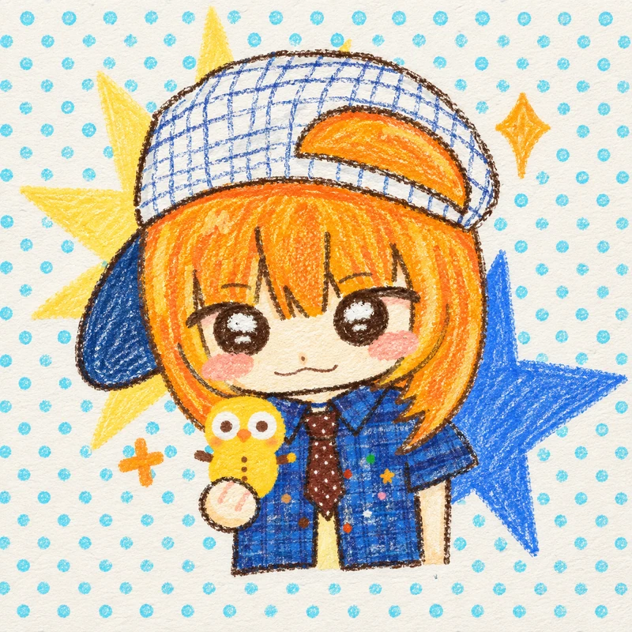
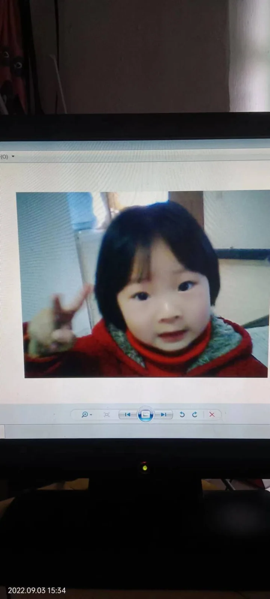
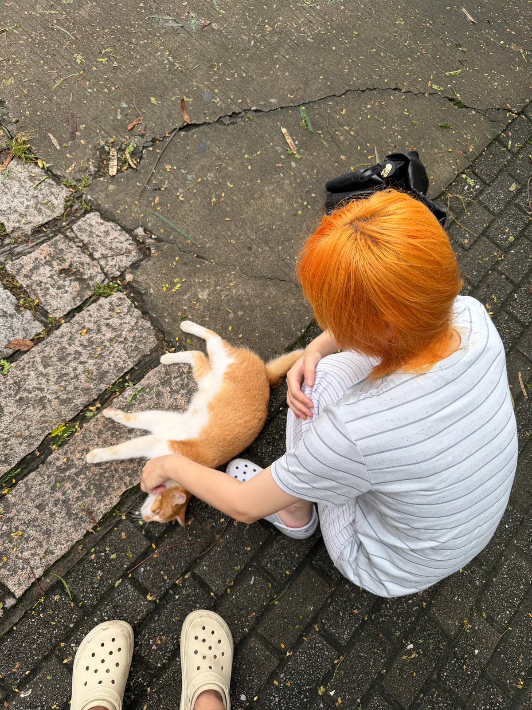
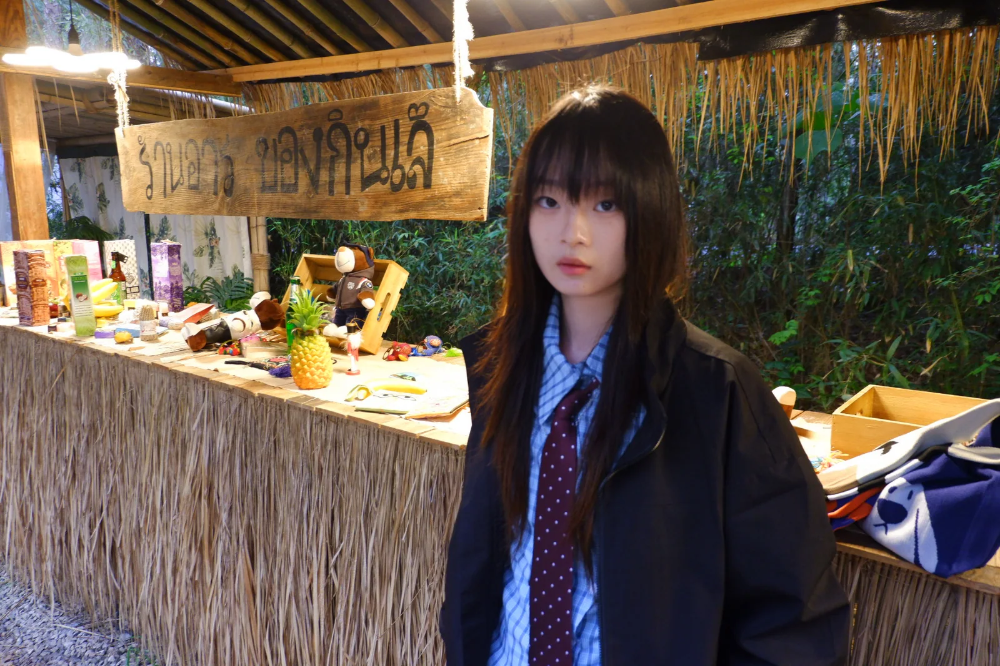
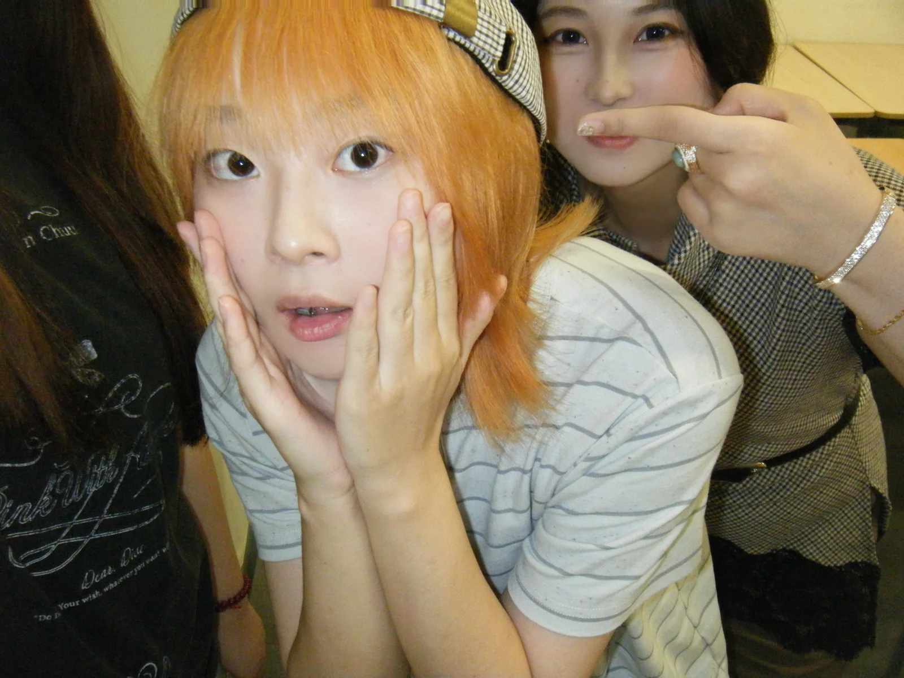
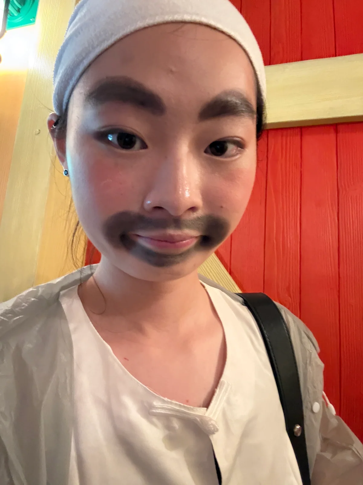
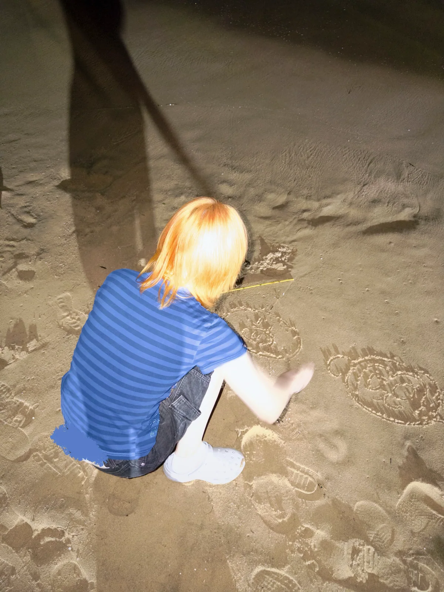
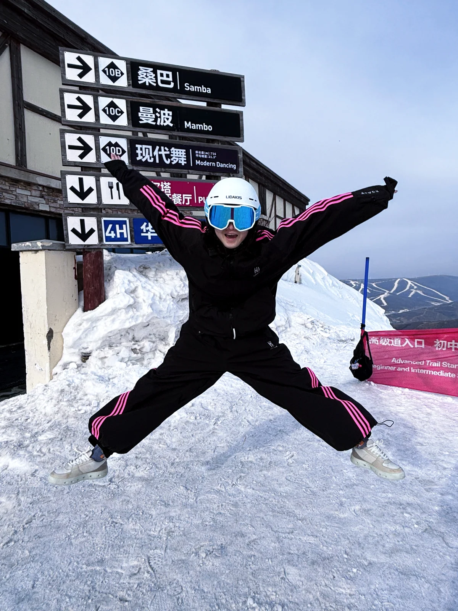
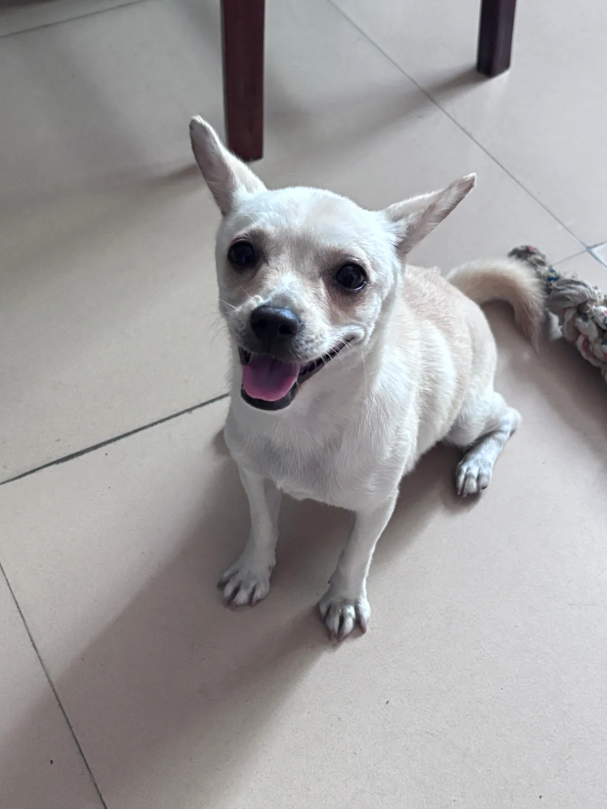
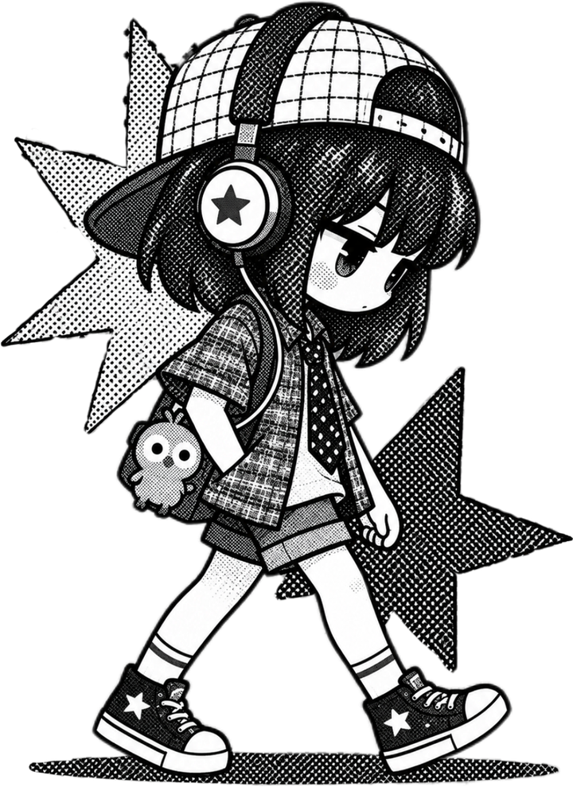

- 统筹10人团队，负责海报设计、推文撰写、讲座筹办与学期刊物编辑，年度工作目标达成率100%。
- 运营社会学官方公众号，累计粉丝6000+，日均阅读量300+，单篇最高阅读量2000。

Welcome to my channel!
Catch a star, and discover a moment.
IT'S A PLEASURE TO MEET YOU!








sea · a whole me
EDUCATION · 教育经历
河海大学
社会学本科 · 2023.09 - 至今
专业前15% · IELTS 7.5
主修社会调查方法、社会统计学、质性研究方法、传播学概论与新媒体运营。
SKILLS · 个人技能
- 内容与运营官方文案、视频脚本、公众号与小红书
- 调研与分析田野调查、深度访谈、SPSS / Stata
- 设计与协作PPT、Excel、Canva、活动统筹与团队管理
03 / CAMPUS
At School
点击下列面板查看细节
- 完成班级事务资料的全流程整理与归档，推动信息规范化管理，信息传递效率提升30%。
- 组织校级心理班会、专业“邻公益”等10+场活动，班级凝聚力评分位列专业第一。
- 独立完成定位、选题、封面、内容制作与数据复盘，结合 AI Agent 提升效率；发布5篇笔记，单篇最高浏览2000+、点赞200+。
- 3个月累计增粉1200+，笔记总曝光量突破1.2万，商业合作转化率达100%。
- 围绕乡村文旅产业开展田野调查，完成30+名访谈对象的深度访谈与3万+字一手调研报告，并使用 SPSS、Stata 与 AI Agent 分析数据。
- 参与撰写1.5万字项目脚本；项目进入国家级大创复赛，方案获当地文旅局采纳，预计带动当地旅游收入提升20%。
- 统筹访谈、勘景、拍摄与后期，独立完成1000+字视频脚本，并负责调色、字幕与多片段衔接优化，累计打磨5版。
- 作品从全国200+支高校队伍中突围，获全国三等奖；获官方公众号转载，累计播放3000+。
04 / INTERNSHIP
Internship
BRAND COMMUNICATION
中国平安财险
无锡分公司 · 品宣部实习生2026.01 - 2026.0220+正式稿件
1200+视频播放
800+视觉覆盖
- 完成正式稿件20+份与 3000 字党建述职报告，内容通过率100%。
- 独立完成晨会、新春视频从脚本到剪辑的全流程，累计播放1200+次。
- 参与年会策划、协调与执行并设计5张海报，活动实现零差错落地。
PUBLIC COMMUNICATION
云林街道办事处
党政办实习生2025.08 - 2025.0912份材料
8篇内容
1.2W+居民覆盖
- 参与年度党建计划、党员学习总结等官方材料编写，累计12份并全部通过上级审核。
- 负责通知与公众号推文，累计产出8篇，平均阅读500+，覆盖辖区居民1.2万+。
- 在政策要求与居民沟通之间，积累了正式表达与公共沟通经验。
05 / PORTFOLIO
作品集
CONTENT OPERATION · XIAOHONGSHU
雅思赛道账号：从 0 到 1
从真实备考需求出发，记录赛道判断、内容制作与数据复盘的完整过程。
10,972 流量曝光1,859 页面观看26% 互动率
- 01赛道观察
- 02用户需求
- 03账号定位
- 04选题策划
- 05内容制作
- 06数据复盘
- 07商务合作
VISUAL STORY · JIUZIWAN
鸠兹湾：社会学如何走进影像
挖掘鸠兹湾返乡青年乡村坚守的共性，突出一个好的组织文化对于成功的乡村创业企业的驱动力。
30+人 调研访谈3版 文稿迭代全国第三 · 最佳人气奖
- 01前期调研
- 02文案撰写
- 03脚本构建
- 04二次回访
- 05剪辑配音
- 06比赛成果
QUANTITATIVE RESEARCH · SPSS 25.0
媒介使用与社会信任：从选题转向到分层回归
基于 CGSS2023 的 6,982 个有效样本，比较互联网、报纸与电视对社会信任的差异化影响。
6,982 有效样本3 层 分层回归SPSS 25.0
- 01初始选题
- 02问题诊断
- 03研究转向
- 04变量设计
- 05数据处理
- 06分层回归
- 07结果反思
06 / BEYOND THE RESUME
More About Me
选择一条线索，看见真实的我
THE REAL ME
如果你想了解我更多：
生日：
2004年11月23日
星座：
射手座
MBTI：
虽然不太信，但是偷偷测了很多次，在ENTJ-INTJ之间来回横跳
特长：
书法、架子鼓、学习、写东西、冷幽默
讨厌的事情：
磨叽、吵架、犹豫不决、芹菜
喜欢的东西：
小动物、植物、蓝色、动漫、卤肉饭
MY INTERESTS
兴趣爱好

运动
·不喜欢跑步但是热爱运动，包括游泳、羽毛球、滑雪……（都是三脚猫功夫）
阅读
本人书籍榜单TOP3：《红楼梦》《霍乱时期的爱情》《百年孤独》
（也喜欢看日本文学，但是日本文学看多了影响心情，遂戒断。）
（兴致来了喜欢阅读人类学书籍，但至今为止只读完了老师布置的课程作业）
手账
最近发掘的新爱好，特别是和亲近的人一起做手账，让人心情舒畅~
游戏
技术很差但是爱玩，前段时间喜欢《洛克王国》，再往前喜欢《星露谷》《我的世界》。我喜欢完自由度高的大世界探索游戏。关于竞技类游戏，我玩过《王者荣耀》《绝地求生》之类，这种游戏和朋友一起玩特别开心，一个人玩就有点无聊。音游也玩过不少，市面上热门的音游都玩过，但后面弃游是因为喜欢的歌都打完了，也不喜欢过剧情，水平也就那样，我忍受不了难听又更新慢的曲库。要是有一款可以自由导入歌曲的音游就好了！
散步
我喜欢去植物园、公园等自然之地，旅游也很喜欢自然风光的景点，什么也不干就是走。